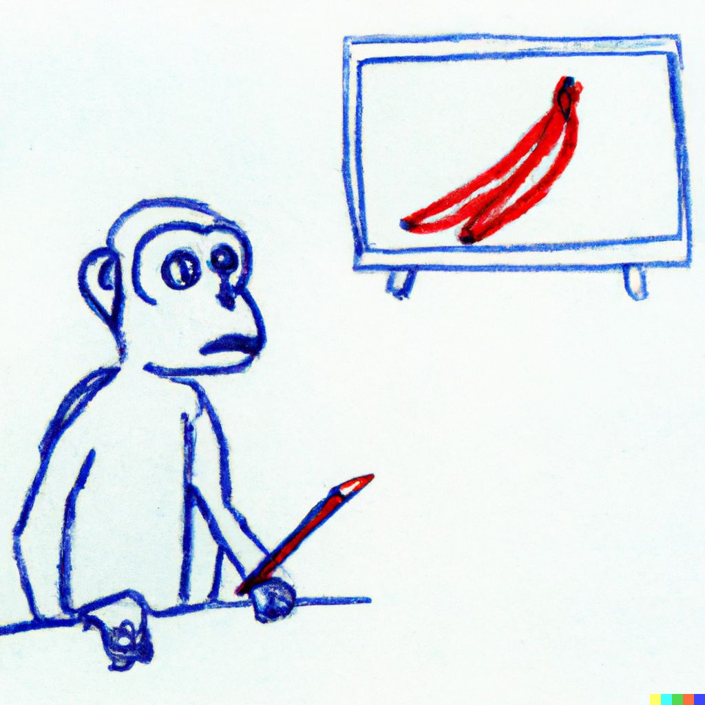
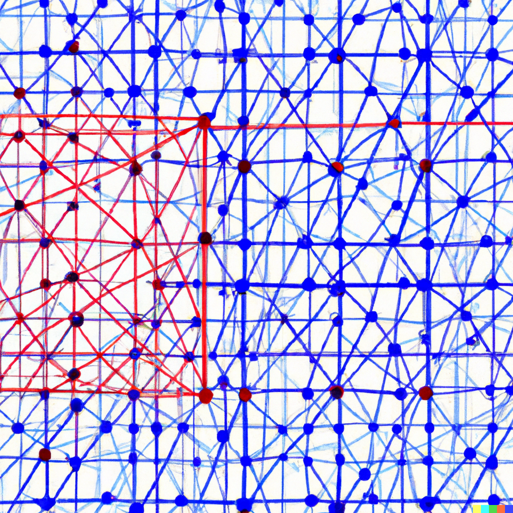
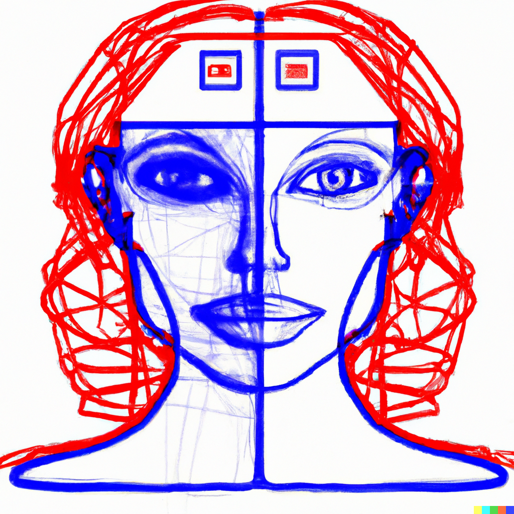
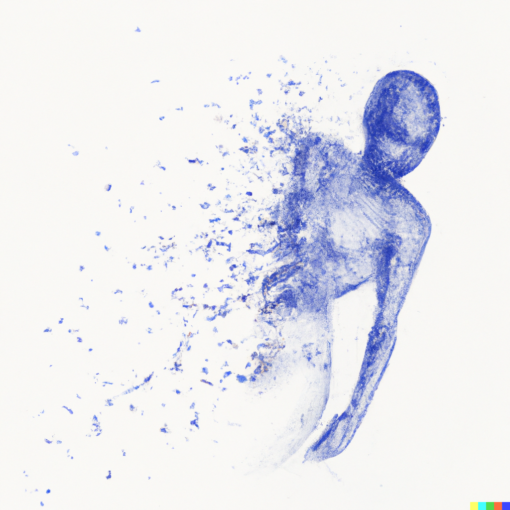
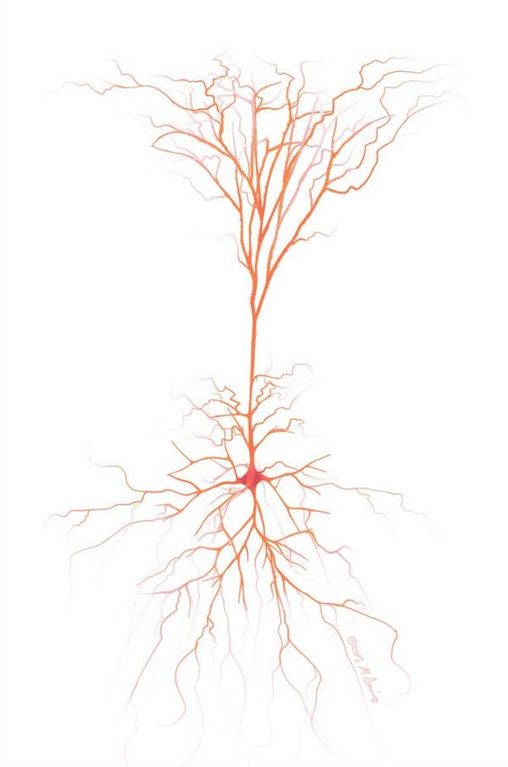

My projects
MonkeySee: Space-time-resolved reconstructions of natural images from macaque multi-unit activity
In this project, we reconstructed naturalistic images directly from macaque brain signals using a CNN-based decoder. 
Brain2Pix: Fully convolutional naturalistic video frame reconstruction from brain activity
This project focuses on reconstructing video frames from fMRI data using a fully convolutional neural network (FCN).
Inverse Receptive Fields
We explore the use of inverse receptive fields to interpret how visual stimuli are encoded in the brain.
Affine Feature Response Transform (AFRT)
Introducing a new framework for decoding and transforming feature responses in neural networks. 
Adversarial Attacks on Humans and Machines
Exploring adversarial attacks and their implications on both humans and machine learning systems. 
NESTOR: Neuronal Stimulation for Recovery of Function
This project focuses on cortical implants aimed at helping the blind recover certain visual functions.  Learn more about this project on the NESTOR project page.
Neuroanatomy
Exploring the intricacies of the brain and its structures to understand neuroanatomy better. 
Visit the Neuroanatomy project page for more details.
Climbersoap: Designing, Making, and Selling Climbing-Inspired Artisan Soaps
Check out my climbing-inspired soaps at climbersoap.com.